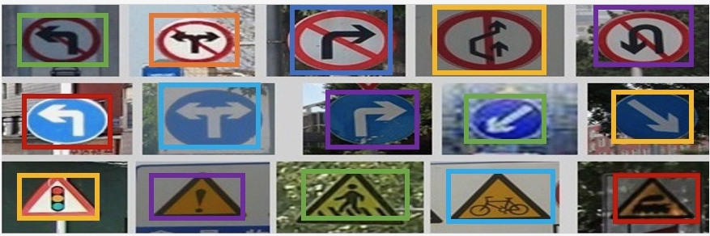

Traffic Sign Recognition: What Each CNN Component Buys You
A controlled ablation on the German Traffic Sign Recognition Benchmark (43 classes, IJCNN 2011). Start from a plain CNN, change one thing at a time, and measure what it does to generalisation.
- Ablation study
- Neural Networks & Deep Learning course
- University of Tehran · 2020
- Keras · GTSRB
- with Fatemeh Haghighi

43traffic-sign classes
26,640training images per epoch
91.8% → 96.8%validation accuracy, baseline to batch-norm model
5single-factor experiments
Explore the ablations
One change at a time
InteractiveFinal validation accuracy of each run, read from the training logs in the notebook. Pick an experiment.
Takeaways
- The baseline overfitsIt reaches 100% training accuracy within 25 epochs, while validation stalls near 92%: capacity is not the problem, generalisation is.
- Regularisation pays mostDropout(0.5) lifts validation accuracy from 92.5% to 96.5% at the same 100 epochs.
- Batch norm trains fastestWith batch norm the model hits 96.8% in 30 epochs; the same network without it is at 78.6%.
- Augmentation can hurtRandom transforms made validation loss unstable and cost 8 points here. A likely cause: some transforms change a sign's meaning (a mirrored "turn left" reads as "turn right").